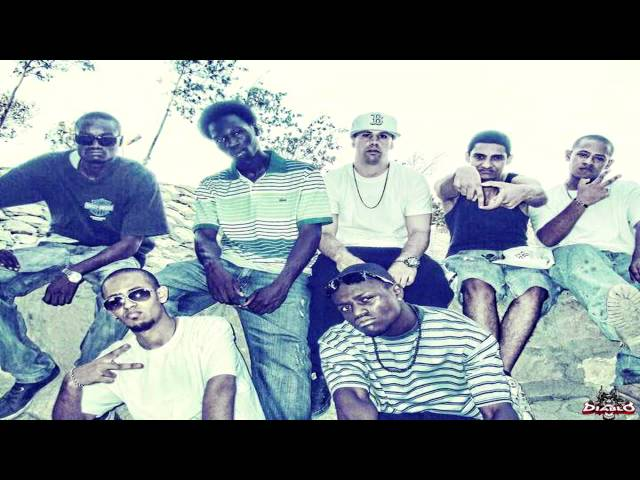
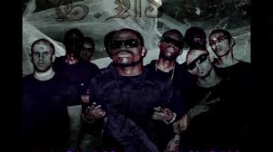

It all started back in 2004 when i started to listen to rap music and i felt then that, that was my passion to music as i used to sing songs as everyone in his regualr life but since i started the rap and i cant get it out of me it wan't an easy challenge as it took me too much time and effort to become what i am now.
All the credit should be back to the one and only click who supported me and stood beside me till i became who i am now they are more than family to me as we were already a family and got eachothers back at all time, although we hav had a lot off hard times and we were pushed down from life and didn't and couldn't quite as it was already a life not just life style.
 